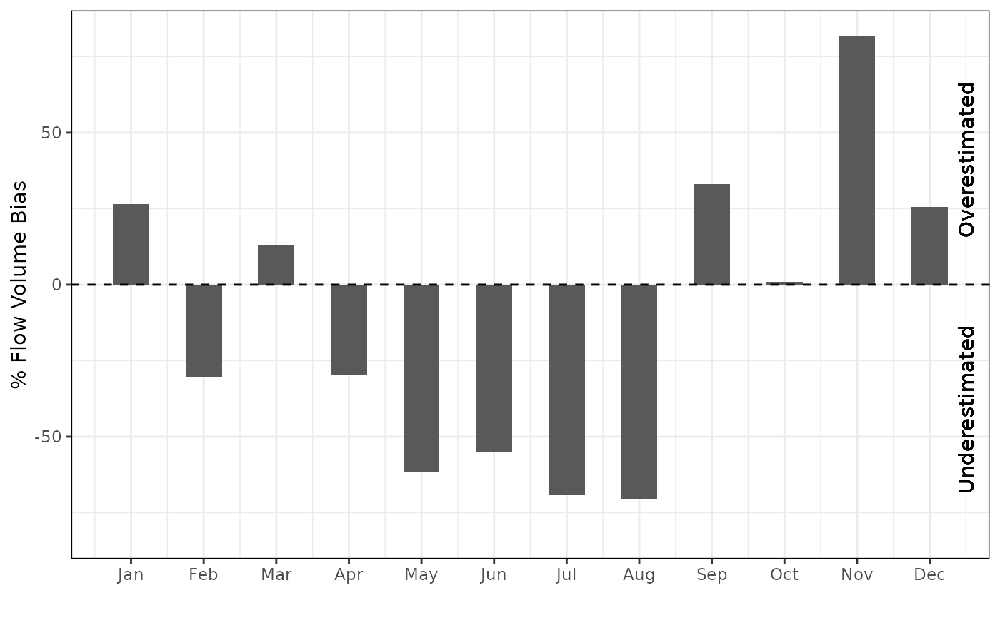
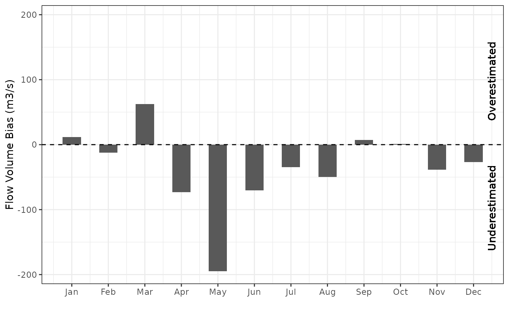

Creates a plot of the monthly volume biases in the simulated flow series.
rvn_monthly_vbias(
sim,
obs,
add_line = TRUE,
normalize = TRUE,
add_labels = TRUE,
incomplete_month = FALSE
)time series object of simulated flows
time series object of observed flows
optionally adds a horizontal line to the plot for reference
(default TRUE)
option to normalize the biases and report as percent error
(default TRUE)
optionally adds labels for early peak/late peaks on right
side axis (default TRUE)
whether to include months with missing days in the summation
(default FALSE)
monthly volume biases
Calculates the monthly volume biases and optionally creates a plot of them. The monthly volume biases are averaged across all years of data. If normalized, the biases are calculated as:
(Vi_sim - Vi_obs)/Vi_obs*100
to be expressed as a percent error.
The sim and obs should be of time series (xts) format and are assumed to be of the same length and time period. The flow series are assumed to be daily flows with units of m3/s. Note that a plot title is purposely omitted in order to allow the automatic generation of plot titles.
The add_labels will add the labels of 'overestimated' and 'underestimated'
to the right hand side axis if set to TRUE. This is useful in interpreting
the plots. Note that the biases are calculated as sim_Volume - obs_Volume,
which means that negative values mean the volume is underestimated, and
positive values mean the volume is overestimated.
rvn_annual_volume to create a scatterplot of annual flow
volumes
# load sample hydrograph data, two years worth of sim/obs
data(rvn_hydrograph_data)
sim <- rvn_hydrograph_data$hyd$Sub36
obs <- rvn_hydrograph_data$hyd$Sub36_obs
# check the monthly volume bias; normalizes by default
rvn_monthly_vbias(sim, obs)
#> Number of months excluded: 1
#> Number of months included: 23
#> $df.mvbias
#> mvbias
#> Jan 26.4767246
#> Feb -30.1912953
#> Mar 13.1917920
#> Apr -29.6779258
#> May -61.6461393
#> Jun -55.1406116
#> Jul -68.9622504
#> Aug -70.4903267
#> Sep 33.0222767
#> Oct 0.8430192
#> Nov 81.6977124
#> Dec 25.5154499
#>
#> $plot

#>
# check unnormalzied monthly volume biases; see the larger volumes in certain periods
rvn_monthly_vbias(sim,obs,normalize = FALSE)
#> Number of months excluded: 1
#> Number of months included: 23
#> $df.mvbias
#> mvbias
#> Jan 11.544355
#> Feb -12.105343
#> Mar 62.659294
#> Apr -73.400235
#> May -194.812215
#> Jun -70.241846
#> Jul -34.557970
#> Aug -49.736272
#> Sep 7.026953
#> Oct 0.850050
#> Nov -38.586910
#> Dec -26.795530
#>
#> $plot

#>